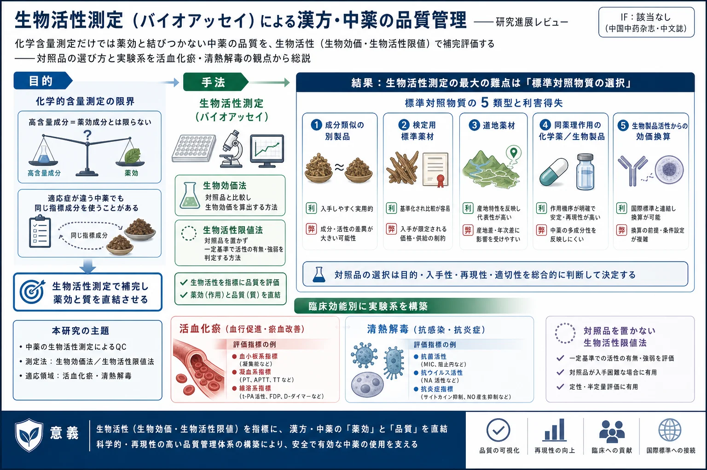

生物活性測定（バイオアッセイ）による漢方・中薬の品質管理——研究進展レビュー

<!-- 方針: ほぼ全訳＋必要に応じた補足。原文（中文）構成に沿って訳出。本文の[N]は原文の番号引用に対応し末尾の参考文献にリンクする。原文は総説で図表なし（原本PDFをPyMuPDFで全ページ確認、埋め込み図・実質的な図版なし）。「> 補足:」は訳者注。 -->
書誌情報
- 原題: 基于生物活性测定开展中药质量控制的研究进展（Development of bioassay method in quality control of traditional Chinese medicine）
- 著者: 游云（YOU Yun）1・廖福龙（LIAO Fu-long）1・黄璐琦（HUANG Lu-qi）2*（1. 中国中医科学院中薬研究所／2. 中国中医科学院中薬資源センター, 北京, 中国）
- 掲載: 中国中药杂志（China Journal of Chinese Materia Medica）, 2018, Vol. 43, No. 3, 454–459. DOI: 10.19540/j.cnki.cjcmm.20171208.006
- インパクトファクター: 該当なし（中文核心誌でJCR収載外。中薬分野の代表的学術誌）
- 種別: 綜述（レビュー）／国家自然科学基金（81274006）
補足: 生物活性測定（bioassay, 生物検定） ＝標準対照品と被検品が生体（動物・臓器・組織・細胞・生体マーカー等）に及ぼす特定の生物効果を比較して、被検品の品質・活性を評価・管理する方法。生物効価測定法（生物効価法） ＝相対効価を定量する（力価U/mL等）。生物活性限値測定法 ＝ある限値用量で定性・半定量的に合否を判定する。中薬（漢方生薬・方剤）の品質を、化学的な指標成分の量だけでなく「実際の薬理作用の強さ」で担保しようという発想。対照品／標準対照物質 ＝相対効価の基準にする既知の参照物質。
要旨（摘要）
化学的含量測定を土台に、中薬複方の生物活性測定を行うことで、その品質を総合的に評価・管理できる。本稿は近年発表された生物活性測定に関する文献を総合的に分析した。標準対照物質の選択 と 実験系の確立 が、現在の中薬生物活性測定の難点である。現在、生物活性測定の標準対照物質には主に次が含まれる：成分がほぼ類似する異なる由来の製品、検定用標準薬材、道地薬材、臨床で常用され同じ薬理作用をもつ化学薬品または生物製品、生物製品の活性を介して中薬効価に換算したもの、など。本稿では 活血化瘀 と 清熱解毒 という臨床効能の観点から、常用される生物活性測定系を総括した。企業の内部管理から業界の承認に至る中薬生物活性測定プラットフォームを段階的に確立することは、中薬の工業的生産における重要な内容の一つとなる。
キーワード: 中薬；生物活性測定；標準対照物質；品質管理
序論
中薬の品質可制御性は、中薬の安全性・有効性を保証する重要な基礎である。常用される中薬の品質管理法には、薬材の外観・形状鑑別、化学的定性鑑別、指標成分検出、化学指紋図（フィンガープリント）などがある。中薬の品質管理を行う理化学的分析技術は急速に発展しているが、依然として共通の問題が存在する。一方では、しばしば選ばれる高含量で管理しやすい成分が、必ずしも薬効成分とは限らず、中薬の薬効と直接的・内在的な関連を築きにくい。他方では、適応症がまったく異なる多くの中薬が同じ含量測定指標（芍薬苷・黄耆甲苷・大黄素・緑原酸など）を採用しており、中薬製剤の品質を真に反映しにくい。薬材については、産地・季節・加工・炮製の違いが飲片の品質差を招く。中薬複方製剤については、多種の活性成分が多様な薬理作用をもつため、少数の化学成分の管理だけでは品質を完全に管理し臨床効果を反映することはできない。
中医薬の臨床効果は中薬の内在品質を反映する。生物活性測定は臨床効能を反映する基本的方法の一つであり、中薬とその製剤の主治機能や毒副作用に結びつけ、生体（個体動物・臓器・組織・細胞・生体マーカー等）上の適切な反応を見出すことで、中薬の品質を直観的に反映できる。生物活性測定法は実験薬理学を基礎、生物統計学を道具とし、特定の実験計画法を用いて、対照品と被検品が生体または離体臓器・組織に及ぼす特定の生物効果を比較して、被検品の品質・活性を評価・管理する。測定法には 生物効価測定法 と 生物活性限値測定法 がある。
生物活性評価法は一般の薬理学実験法とは異なり、定量薬理学と薬検分析の二重の属性と要求 を備える。一般薬理学実験法は薬物効果の傾向の再現を求め、実験結果と対照群の比較が統計的に有意かの分析を重視する。薬検分析は試験データの絶対値の再現を求めるが、一定の誤差範囲を許容する[1]。中薬生物活性評価の方法学的検討は、試験計画・群分け・対照・用量間隔・定量指標・信頼性検定などの定量薬理学の内容に加え、効果の線形範囲・精度・再現性などの薬物分析の内容も含む。
したがって、化学含量測定を土台に中薬複方の生物活性測定を行えば、その品質を総合的に評価・管理できる。また生物活性測定法は化学的方法の不足を補い、活性の観点から原料薬の優良性・中間抽出物の安定性・製剤および完成品の一貫性をより良く保証できる。本稿は中薬の臨床効能の観点から、近年の生物効価測定法の進展と現存する難点を総説する。
1. 生物活性測定の対照品の選択
2015年版《中国薬典》（四部）によれば、中薬生物効価測定法では、被検品の相対効価を測定するために基本的に同質の対照品を採用すべきで、対照品の選択は中薬対照品を第一とし、化学薬を対照品として考慮してもよい。生物活性限値測定法では、中薬成分または化学薬品を方法の信頼性検証用対照品として用いてよい。現在の対照品研究の状況に基づき、郭玉東らは対照品選択の基本原則、すなわち 同質・正確・均一・安定 の原則を提唱した[2]。肖小河らは上記4原則に加え、対照品は 代表性と継続性（可延続性） をもつべきとの原則を補い[3]、特に道地優良薬材を中薬対照品とすることでその継続性を保証できると提起した。同時に対照品は、入手容易・低コスト・良好な安定性も考慮すべきである。必要時には方法の要求に応じて統一的な国家対照品を特製してもよい[4]。実際の研究では、生物活性測定に用いる対照品には以下のいくつかの類別がある。
1.1 同質原則に合致する対照品
1.1.1 成分がほぼ類似する異なる由来の製品: 金納多注射液は舒血寧注射液と成分が類似するが、不純物が少なく製剤工程がより安定で、薬効成分の含量・比率がより正確に管理される。金納多注射液を舒血寧注射液の生物効価測定の標準参考物質として選び、舒血寧注射液の相対生物効価を標定した[5]。血栓通カプセルの抗血小板凝集活性測定研究では、注射用血塞通凍結乾燥粉末（三七総サポニン）が三七総サポニン対照品より体外抗血小板活性がより安定（変動係数＜3%、信頼限界率＜18%）で、標準対照物質に適し、血栓通カプセルの相対生物効価の標定に用いられた[6]。赤血球凝集活性を指標に板藍根顆粒の相対生物活性効価を測定した研究では、北京同仁堂製薬廠の1バッチの板藍根顆粒を対照品として、他社製の板藍根顆粒の相対生物効価を標定した[7]。
評価: 成分がほぼ類似する異なる由来の製品は、まず薬効学研究で活性の高いバッチを標準対照物質として確定することが多い。同質性原則に合致し、入手容易、方法学的検討の安定性が良い利点があるが、製品には有効期限があり継続性に乏しい。
1.1.2 標準対照薬材: 金銀花顆粒の生物抗菌活性効価測定法の確立過程では、金銀花対照薬材（中国食品薬品検定研究院）を標準対照品として金銀花顆粒の抑菌効価を標定した[8]。麻黄の品質評価研究では、麻黄の発汗・平喘の生物活性を評価指標に、ラット発汗薬理モデル（発汗量を指標に麻黄の発汗促進効価を検出）[9]と、モルモット離体気管平滑筋の平喘薬効モデル（累積計量法で麻黄水煎液を加え各産地麻黄の解痙率を算出）[10]を構築。両実験とも中国食品薬品検定研究院の同一バッチの草麻黄対照薬材を用い、26〜37の異なる産地の麻黄の生物効価差を標定した。板藍根薬材は臨床で多く抗ウイルスに用いられ、インフルエンザウイルスのノイラミニダーゼ活性検出に基づく板藍根の生物効価検出法を構築し、中国薬品生物製品検定所の板藍根対照薬材を用いて各産地板藍根の生物効価を標定した[11]。大黄の瀉下生物効価研究では、動物の初回排便時間・軟便点数・乾便総数・排便総質量を評価指標に、検定用大黄を参照物質とした[12]。
評価: 検定用標準薬材は生物活性評価の参照薬物として同質性・入手性の要求を満たすが、生物効応の安定性が劣るとの指摘もある[13]。麻黄の生物効価データでは、65%超（17/26）の異なる産地の麻黄薬材が検定用標準薬材より高い生物活性を発揮した[9]。また標準対照品は化学成分検定では指示的役割をもつが、生物活性検出過程では、その中の不純物が効応の安定性に影響しうる。
1.1.3 道地薬材: MTT法でハトムギ（薏苡仁）の肝がん細胞抑制の生物効価検出法を構築し、薏苡仁の道地産区である河北省安国産薏苡仁を作業参照物として、他産地の薏苡仁薬材の生物活性を標定した[14]。張海珠らは活血生物効価検出法と化学指紋図法を併用して大黄の品質を評価し、血小板凝集計で各産地大黄薬材の体外抗血小板凝集の生物効価を測定、甘粛省礼県銓水の掌葉大黄を対照薬材として原始効価を賦値した[15]。
評価: 道地薬材は現在主に産区を標識とするが、産地・基原以外に、生育環境・栽培年限・野生/家種などの他要因も薬材の品質・活性に影響する。道地薬材を生物活性評価の標準対照薬材とするには、なお深い研究が必要である。
1.2 同じ薬理作用をもつ化学薬品または生物製品
当帰薬材の補血活性測定では、シクロホスファミド＋塩酸フェニルヒドラジンでマウス血虚モデルを構築し、赤血球数を補血活性の評価指標に、シクロスポリンAを対照品として当帰の補血活性効価を測定した[16]。益母草は婦人科の常用薬材で、楊明華らはオキシトシンを標準対照品にラット子宮収縮モデルを構築し、子宮収縮幅度を評価指標に益母草カプセル・益母草流エキスの効価を測定した[17-18]。マイクロプレート比濁法で牛黄上清片の抗菌効価を測定した研究では、ポリミキシンを標準対照品に大腸菌への効価、ゲンタマイシンを標準対照品に黄色ブドウ球菌への効価を測定した[19]。
評価: 臨床常用で同じ薬理作用をもつ化学薬品・生物製品を中薬生物活性測定の標準対照品とするには、被検品と対照品それぞれの線形範囲を見出し、その範囲内で両者の量反応線がほぼ平行である必要があり、方法学的検証も要する。
1.3 中薬成分または組分
抗生物質微生物検定用の比濁法で、牛黄上清片の組成・薬理作用の特徴に基づき、主要有効成分の黄芩苷＋梔子苷（5:2）を参照薬物として量効標準曲線・方程式を作成、線形範囲を確定、安定性・再現性・平均回収率試験を行い、黄芩苷＋梔子苷参照薬の中心濃度効価を1000 U·mL⁻¹に設定して、3社の牛黄上清片の抑菌効価限度を標定した[13]。阿魏酸（フェルラ酸）は川芎の有効成分の一つで、in vivo/in vitroでADP誘発血小板凝集を抑制する。フェルラ酸ナトリウムが15〜60 g·L⁻¹で血小板凝集抑制率と良好な線形関係を示すことから、フェルラ酸ナトリウムを標準対照物質とし、フェルラ酸ナトリウム1 mgあたりの効価を1活性単位と定義して、川芎薬材・飲片・川芎含有中成薬の抗血小板凝集活性効価を標定した[20]。
評価: 中薬成分（組分）を複方中薬の生物効価標定の標準対照物質に選ぶ場合、その成分・組分はすでに確認された有効成分（組分）であるべきである。
1.4 生物製品活性を中薬効価に換算
アガロース-フィブリン平板法で、ミミズ由来線溶酵素（蚓激酶, ルンブロキナーゼ）対照品の活性を基準に溶栓カプセル（鮮地龍製剤）の効価を標定し、被検品の効価限値（1 mgあたり600ルンブロキナーゼ単位以上）を確定した[21]。冯五文らは挑糸法で各バッチの紅花注射液のトロンビン抑制作用を測定：紅花注射液をフィブリノゲン溶液に加え一定時間孵置後、トロンビン溶液を加え撹拌混和し、混和から溶液から細糸を引き出せるまでの時間（成糸時間）を記録。トロンビン活性で紅花注射液の抗凝効価を標定し、トロンビン標準品の効価をU1、紅花注射液添加後に実測したトロンビン効価をU2として、紅花注射液の抗トロンビン効価U = U1 − U2 とした[22]。《中国薬典》2015年版（一部）はトロンビン滴定法を採用し、トロンビン活性を基準に水蛭またはヒル（蚂蟥）が中和する1単位トロンビンの量を標定、被検品の効価限値（抗トロンビン活性の水蛭は1 gあたり16.0 U以上、蚂蟥・柳葉蚂蟥は3.0 U以上）を規定した。
評価: 生物製品活性を介した中薬効価換算は、方法が簡便で対照品が入手しやすいが、測定に使える中薬品種は少ない。
1.5 参照物を設けない[23]
中薬生物活性測定過程で参照物を用いない方式は、主に定性・半定量反応で実験再現性が比較的良い場合（例：生物限値法）に適する。灯盞細辛注射液10〜30 mL·kg⁻¹用量はマウス体内血栓形成・ラット体内外血小板凝集を明らかに抑制し、限値用量として製品の品質内部管理に使える[24]。丹参注射液はマウス体内血栓形成・ウサギ体外血小板凝集の抑制、ウサギ体外血漿APTT延長の生物活性をもち、生薬濃度5 g·kg⁻¹を限値用量に丹参注射液の合否を判定[25]。参芎グルコース注射液（塩酸川芎嗪換算）56.0 mg·kg⁻¹（臨床日用量の20倍）を連続3回投与するとマウス生存時間を明らかに延長し、限値用量に使える[26]。生物限値法で醒脳静注射液の醒神開竅活性を測定：20 mL·kg⁻¹（臨床用量の30倍）30分投与でペントバルビタール誘発マウス睡眠への拮抗、塩酸ジメフリン誘発マウス痙攣への影響を観察（指標は睡眠出現時間・持続時間）。肝炎霊注射液5 mg·kg⁻¹はCCl₄誘発肝損傷マウスのALTを明らかに低下させ、同じ閾値用量で異なる社・バッチの活性を測定した結果、この限値用量で内在品質を管理できた[27]。清開霊注射液20 mL·kg⁻¹はCCl₄マウス急性肝損傷モデルで護肝作用の生物活性限値測定に使え、良好な再現性を示した[28]。
評価: 生物活性限値測定法は定性・半定量試験に属し、しばしば生物効価測定をまだ確立できない中薬品種に適用される。
2. 中薬生物活性測定の実験系の選択
生物活性測定に選択できる試験系には、個体動物・離体臓器・血漿・微生物・組織・細胞・亜細胞器・受容体・イオンチャネル・酵素などがある。選択の基本原則は、検出指標の感度が高い・検出結果の再現性が良い・試験操作が簡便であること。筆者は中薬製品の臨床適応症に対し、常用される試験系を以下に総括した。
2.1 活血化瘀類中薬（複方）の生物活性検出試験法
活血化瘀は祖国医学の重要な理論・治療原則であり、《内経》記載の「其の血気を疏し、其れをして調達せしむ」が後世の活血化瘀治則の基礎となった。活血化瘀中薬は中医臨床で最も常用される。多くの研究が、活血化瘀中薬の血小板・凝血・線溶機能への影響が良好な再現性をもつことを示した[29]。そのため活血化瘀類中薬の生物活性測定法の選択では、血小板・凝血・線溶機能を評価する常用指標が主に用いられ、in vivo/in vitro試験モデルで相関する生物活性測定が行われた。主な試験モデル：マウス体内血栓形成試験[24]、マウス急性脳虚血試験[24-25]、体外抗血小板凝集試験[5-6,20]、体外血漿凝血因子活性測定[22,25,30]（APTT・PT・トロンビン時間等）、体外トロンビン活性測定（滴定法・挑糸法[22]・蛍光共鳴エネルギー移動法[31]）、体外血漿フィブリン含量[32]・活性[21]測定など。活血化瘀中薬の生物活性評価の総合評価法・プラットフォームを構築することで、その効果・品質評価に良好な生物学的裏付けを与えられる。
2.2 清熱解毒類中薬（複方）の生物活性検出試験法
清熱解毒類中薬は臨床で広く用いられる。近代薬理研究は、清熱解毒類中薬が広域抗菌・病原微生物抑制作用をもち、黄色ブドウ球菌・溶血性連鎖球菌・赤痢菌および甲型インフルエンザウイルス・日本脳炎ウイルス・ムンプスウイルス等に抑制作用を示すことを明らかにした[33]。清熱解毒類中薬は抗炎症・免疫増強作用ももつ。近年、清熱解毒類薬物の主要効能・作用機序・標的と密接に関連する生物活性を評価指標とし、測定系には主に：抑菌効力測定、抗ウイルス効価測定、インフルエンザウイルス・ノイラミニダーゼ体外活性測定（蛍光検出法）[34-35]、体外で視床下部神経細胞のPGE2放出を抑制する生物活性測定法[36]、シクロオキシゲナーゼ（COX2）・ホスホリパーゼA（PLA）活性測定法[23]、ヒスタミン効応抑制測定法[38-40]、ラジカル消去能測定（DPPH法）[37]研究などがある。加えて、マウス・ラット急性肝損傷保護実験で肝炎霊の活性を測定[27-28]。肖小河らは複方ジフェノキシレート便秘マウスモデルに基づく大黄の各炮製品の瀉下効価測定を構築した[12]。
3. 結語と展望
中医薬の臨床効果は中薬の内在品質を反映し、生物活性測定は臨床効能を反映する基本的方法の一つである。近年、複数の研究機関が品質管理のための中薬生物活性測定を展開しており、標準対照物質の選択 が生物活性測定を行う上での重点・難点である。現在採用される標準対照物質には、①成分がほぼ類似する異なる由来の製品、②検定用標準薬材、③道地薬材、④臨床常用で同じ薬理作用をもつ化学薬品または生物製品、⑤生物製品活性を介した中薬効価換算、が含まれる。これらの探索は貴重な経験を蓄積したが、いずれも利害得失があり、各々の使用条件・使用範囲を明確に規定する必要がある。企業の内部管理から業界の承認へと、中薬生物活性測定プラットフォームを段階的に確立することが、中薬の工業的生産の重要な内容の一つとなる。
補足（実務的示唆）: 本レビューは「化学的な指標成分の量」だけでは中薬の品質＝薬効を担保しきれない、という問題意識に立つ。要点は2つ。①対照品（標準対照物質）をどう選ぶか が生物活性測定の成否を分ける——成分類似の別製品・検定用標準薬材・道地薬材・同薬理の化学薬/生物製品・生物製品からの効価換算、の5類型それぞれに「同質・正確・均一・安定・代表性・継続性」の観点で一長一短がある（例：検定用標準薬材は入手性◎だが効応安定性に難、麻黄では産地品の65%が標準薬材より高活性）。②実験系は臨床効能で選ぶ——活血化瘀なら血小板/凝血/線溶、清熱解毒なら抗菌/抗ウイルス(NA活性)/抗炎症。対照品を置かない生物活性限値法は、まだ効価測定を確立できない品種の定性・半定量に有用。本サイトのスペクトル効果（薬効連動指紋）系論文（shd・spectrum-effect-review）や、指標成分定量のQAMS/Q-marker系と対をなす「薬効そのものを測る」QCの総説として読める。
参考文献（References）
- 肖小河, 王伽伯, 鄢丹, 等. 生物评价在中药质量标准化中的研究与应用. 世界科学技术—中医药现代化, 2014, 16(3): 514.
- 郭玉东, 王志斌, 周建平, 等. 中药生物活性测定法中标准品建立的研究. 药物分析杂志, 2013, 33(4): 706.
- 李寒冰, 鄢丹, 曹俊岭, 等. 中药生物效价检测用对照品的选择与标化. 中国中药杂志, 2009, 34(3): 363.
- 唐元泰, 芮菁. 关于中药标准采用"生物活性测定"项目的建议. 中国药品标准, 2007(6): 39.
- 王碧松. 生物活性测定法用于活血化瘀类中药注射剂质量控制的研究. 北京中医药大学, 2010.
- 韩冰, 毛鑫, 韩淑娴, 等. 基于抑制血小板聚集活性检测的血栓通胶囊质量控制研究. 中国中药杂志, 2015, 40(23): 4597.
- 唐慧英, 鄢丹, 张少锋, 等. 基于凝集活性检测的板蓝根颗粒质量生物测定方法研究. 药学学报, 2010, 45(4): 479.
- 徐容. 基于生物抑菌活性的金银花颗粒效价测定方法. 中国药师, 2016, 19(2): 369.
- 曹喆, 毛福英, 刘秀, 等. 基于发汗生物效价的麻黄质量评价研究. 中国药房, 2016, 27(13): 1759.
- 赵云生, 谢丽霞, 毛福英, 等. 基于平喘生物效价的麻黄品质评价研究. 中草药, 2015, 46(24): 3695.
- 李寒冰, 鄢丹, 王伽伯, 等. 基于神经氨酸酶活性检测的板蓝根品质的生物评价. 药学学报, 2009, 44(2): 162.
- 李会芳, 王伽伯, 肖小河, 等. 基于致泻效价检测的大黄不同炮制品的生物品质研究. 时珍国医国药, 2012, 23(5): 1215.
- 张恩户, 乔慧, 王光建, 等. 微孔比浊法测定牛黄上清片的抗菌效价. 中药药理与临床, 2012, 28(3): 23.
- 李远, 陈玮娜, 李海滨, 等. 基于生物效价检测的薏苡仁质量控制研究. 辽宁中医杂志, 2011, 38(11): 2232.
- 张海珠, 谭鹏, 刘振杰, 等. 基于活血生物效价和化学指纹图谱的大黄品质评价研究. 药学学报, 2017, 52(3): 436.
- 王晓晓, 张丽宏, 李曦, 等. 当归药材补血活性的定量测定. 中国中药杂志, 2015, 40(7): 1381.
- 杨明华, 杨苏蓓, 金祖汉, 等. 益母草药材生物检定方法的研究(Ⅱ)——缩宫素、益母草量效关系和检定适用效应模式的建立. 中药材, 2002(6): 409.
- 杨明华, 王溶溶. 益母草药材生物检定方法的研究(Ⅲ)——鲜益母草胶囊和益母草流浸膏生物效价与临床疗效的相关性观察. 中国现代应用药学, 2004(2): 124.
- 王丛, 张慧, 李慕睿, 等. 基于抗菌抗病毒效价检测的穿心莲药材质量评价研究. 中药材, 2015, 38(9): 1858.
- 管咏梅, 陶玲, 朱小芳, 等. 乳香没药挥发油对川芎中阿魏酸促透机制的研究. 中国中药杂志, 2017, 42(17): 3350.
- 董培智, 朴晋华, 党爱华, 等. 量反应平行线法在溶栓胶囊蚓激酶效价测定方法学研究中的应用. 中国中药杂志, 2010, 35(11): 1410.
- 冯五文, 李瑞煜, 董芹, 等. 红花注射液生物活性测定方法的建立与质量评价. 中药与临床, 2016, 7(3): 39.
- 鄢丹, 任永申, 骆骄阳, 等. 中药质量生物测定的思考与实践——以板蓝根为例. 中国中药杂志, 2010, 35(19): 2637.
- 芮菁, 张月玲, 李元静, 等. 灯盏细辛注射液生物活性限度测定方法适用性研究. 中国药品标准, 2010, 11(2): 95.
- 刘倩, 陈晨, 张媛, 等. 丹参注射液生物活性限度测定方法适用性研究. 中国药事, 2013, 27(9): 938.
- 郑林, 董莉, 董永喜, 等. 基于耐缺氧能力的参芎葡萄糖注射液生物活性测定方法的建立. 中国医院药学杂志, 2015, 35(11): 989.
- 潘善庆, 田洪, 陈子渊, 等. 肝炎灵注射液的生物活性测定方法研究. 中国药品标准, 2009, 10(4): 264.
- 阮浩澜, 陈琪, 黎旸, 等. 清开灵注射液护肝药效限值测定法的建立. 中国医药导报, 2013, 10(27): 98.
- 汪钟. 活血化瘀中药对血小板功能调节的机理. 中国中西医结合杂志, 1992(9): 567.
- 金家金, 王志斌, 苏斌, 等. 水蛭体外抗凝血实验研究及其生物活性测定方法反应体系的筛选. 中国药学杂志, 2014, 49(22): 1997.
- 张忠兵, 王思瑶, 郑顺亮, 等. 疏血通注射液的抗凝生物活性测定方法及其机制研究. 中国现代中药, 2016, 18(5): 568.
- 苏斌. 水蛭生物活性测定质量控制方法研究. 北京中医药大学, 2014.
- 庞博, 董军杰, 庞国勋, 等. 清热解毒类中药的药理作用及临床应用探讨. 临床合理用药杂志, 2013, 6(31): 180.
- 陈素珍, 李瑾翡, 曾秋敏, 等. 板蓝根提取液抗病毒活性的生物评价方法研究. 中药新药与临床药理, 2015, 26(2): 198.
- 杨丽, 王雅琪, 刘升长, 等. 三种常用半枫荷类药用植物的化学成分与生物活性研究概况. 中国实验方剂学杂志, 2016, 22(22): 191.
- 左泽平, 王志斌, 高阳, 等. 柴胡注射液体外抑制PGE2释放的生物活性测定法. 中国中药杂志, 2013, 38(22): 3957.
- 楚笑辉, 王伽伯, 周灿平, 等. 不同商品等级枸杞子的抗氧化活性比较及其生物效价检测. 中国新药杂志, 2011, 20(7): 599.
- 周佳, 张晨, 尚靖, 等. IL-33刺激原代培养的小鼠骨髓来源肥大细胞脱颗粒并分泌IL-1β、IL-6及TNF-α. 细胞与分子免疫学杂志, 2016, 32(4): 462.
- 李洪梅, 康旭亮, 李小芹, 等. 苏黄止咳颗粒平喘止咳作用的实验研究. 中国实验方剂学杂志, 2008(8): 51.
- 何韶衡, 李萍. 肥大细胞激活及组织胺水平测定. 华西医科大学学报, 2002(4): 586.